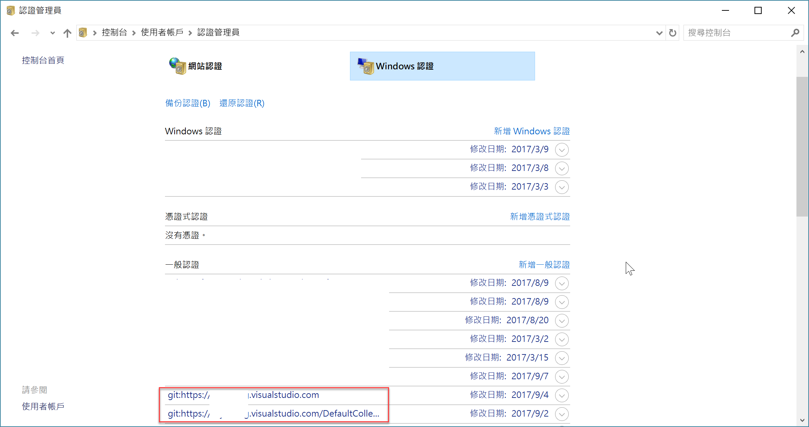
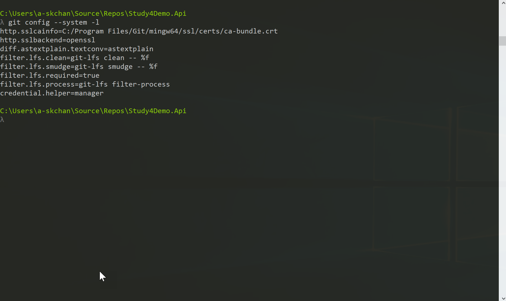
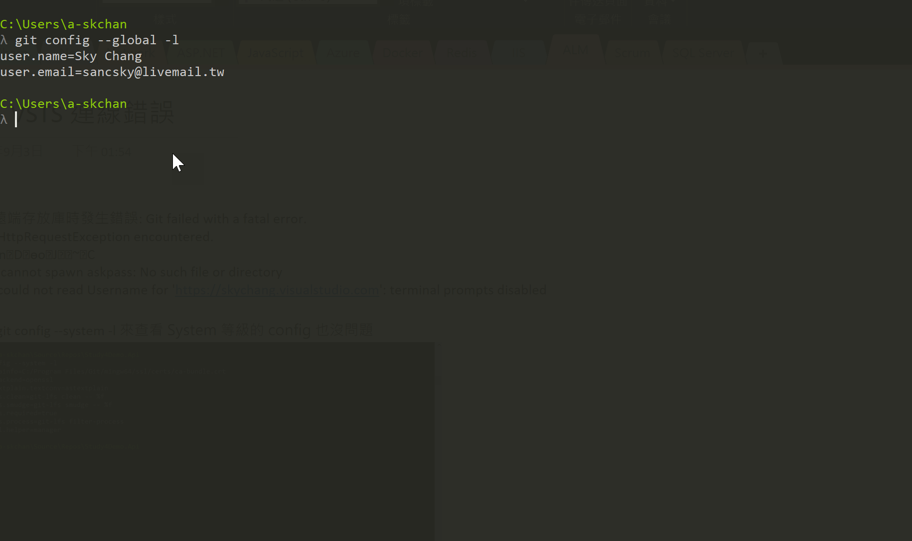
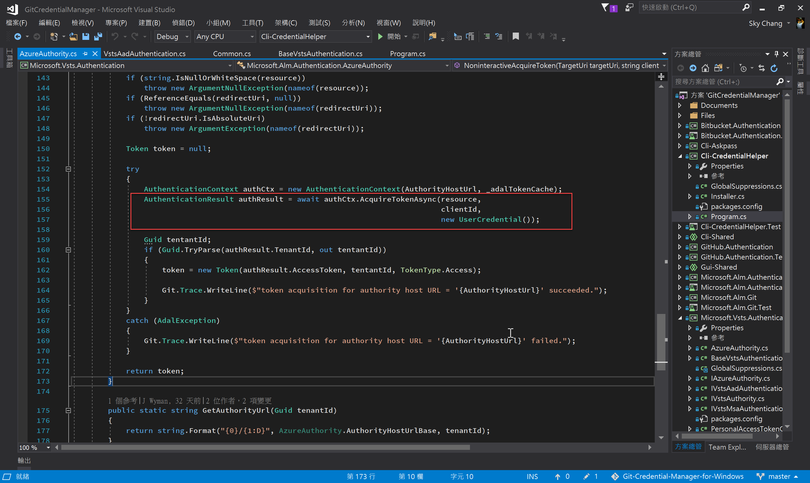

故事
最近遇到一個怪問題，這個問題的發生，主要是使用 VS 2017 連線到 VSTS 的 Git 的時候，發生了遠端存放庫錯誤，而本地端的電腦，也有加入另外一個網域，( 例如 :SkyChang.com )，而 VSTS 是屬於另外一個網域 ( 例如: Study4.tw ) 他的錯誤訊息如下。
複製遠端存放庫時發生錯誤: Git failed with a fatal error.
fatal: HttpRequestException encountered.
ǰe n D ɵo Ϳ ~ C
error: cannot spawn askpass: No such file or directory
fatal: could not read Username for ‘https://xxx.visualstudio.com': terminal prompts disabled
基本上，在正常的情況下，應該會跳出視窗來輸入 MS Account 或是 AAD 帳號，但不知為何，也沒跳出，只會要求我們重新輸入帳號密碼，但因為這邊輸入的帳號密碼，一定不等同於 MS Account，所以也沒辦法輸入甚麼，最後只會出現
如上面所看到的錯誤，並請被拒絕登入。
而這個問題，在以前 VS 2015 連線到 TFS 2017 的時候，也出現過一次…
而今天的這個故事，就是敘述一下當初是怎樣找到解決方案的經過。
P.S 訊息的亂碼，就真的是亂碼…
前言
必須先說在前面，過程中，可能會有很多是猜測，如果大家覺得有餘慮，或是覺得不合理，就自行跳過這篇文章吧，就如前面所說的，這篇不是想要探討整個登入流程，只是自己記錄一下這幾天找到錯誤的過程罷了。
VSTS 沒有設定好!?
首先，當初小弟我看到錯誤訊息，當下第一個意識是，會不會 VSTS 有東西沒設定好，所以快速地進入 VSTS 去看裡面的權限與設定，並且比對其他的 VSTS ，但赫然發現，也沒甚麼異常，所以就在雲端建立了一個對照組；但後來發現，雲端的 VM 是可以正常登入的 !! (驚)。
所以這時候，就下意識地覺得，嗯，因該是筆電上的問題了…
VS 2017 的問題!?
接下來，為了釐清，是 VS 2017 的問題還是 Git 本身的問題，所以小弟又跑去 cmd 底下直接 git clone，結果出現的訊息完全一樣。
後來仔細看了一下訊息，感覺上應該是 askpass 無法產生，所以會希望我們自行輸入帳號密碼，但又因為沒有帳號密碼，所以就被跳出被拒絕登入的訊息。
後來 Google 了幾篇，也找了幾篇，有一篇有提到，如果本機電腦加了和 VSTS 不同的 AD，可能會發生問題，但後續看了一下回復，感覺也不像… 而目前因為主要是沒有視窗跳出來登入，所以下意識覺得，會不會是因為登入的帳號，被 Cache 住了!?，所以每次登入的時候，都用到錯誤的帳號登入.. ( 因為筆電是加入到另外一個 AD )，所以猜想是不是每次都使用到本機的 AD 帳號登入…
所以就去了憑證中心砍紀錄… ( 因為 Windows for Git ，是利用 Git Credential Manager 來記錄的 )

結果…還是一樣，沒啥作用。
懷疑 Git 設定
而同時間，也懷疑，有沒有可能是 Git 設定的問題，例如沒用到 GCM ( Git Credential Manager )，所以也察看了 Git 的設定。
小弟使用 git config –system -l 來查看 System 等級的 config ，但也沒發現甚麼問題
( 或是到底下目錄察看也可以 C:\Program Files\Git\mingw64\etc.gitconfig )
基本上 creadntial.helper 的值為 manager，就是代表有使用 GCM。

使用 git config –global -l 查看 Global 也沒啥異狀
( 或是在家目錄底下也可以查到 )

補充，如果要設定與移除，可以使用底下命令
1 | git config --system --unset credential.helper |
開始進一步的追查 Log
基本上，找不到問題的時候，只能祈禱開發人員佛心的有寫 Log，所以就想說，把 Git 的過程詳細拋出看看
於是小弟我使用 set GIT_TRACE=1 來查看詳細執行的 Log。後來發現，是 GCM 的部分，發生問題!!，但 Log 卻沒有詳細的紀錄，為什麼發生錯誤…
( 這邊很遺憾，小弟沒截到圖… )
但不管怎樣，我們終於有了追查的目標了。
目標 Git Credential Manager
後來翻了 GCM 的文件，和 Issue，好像也沒有類似的情境，此時又無法突破…
後來心一橫…決定直接 Trace GCM Source Code ….
GCM 的 Source 還滿容易看的，每一塊每一塊都寫得乾乾淨淨，清清楚楚，但因為這個案發現場已經被小弟破壞掉了，所以沒辦法一步一步寫在文章裡面。
後來終於追到發出 Exception 的位置，如下圖

這次小弟的錯誤，主要是錯在這行
1 | AuthenticationResult authResult = await authCtx.AcquireTokenAsync(resource,clientId,new UserCredential()); |
這行其實是使用了 Azure SDK，去取得 Token，但沒想到，這行拋出來的竟然是 dc not find …，因為拋出了這個 Exception ，又被上層的 try catch 處理掉了，所以沒有在最外層顯示出來這個錯誤。
解決方式
其實很簡單，以小弟的案例，就是連線到 VPN，透過 VPN 可以抓到我們公司的 DC，就解決了…
當可以連線到 DC 後，重新使用 git clone ，就順利地跳出視窗了…
但同時，如果斷掉 VPN ，這個 Exception 也不會再出現了…
雖本來想開一個 Issue 或是直接改 Code PR 上去，但外務太多，也沒時間繼續追下去，再加上案發現場已經被破壞掉，所以就先記錄到這邊…
後記
未來如果剛好有朋友有遇到這個問題 XDD，可以考慮連到可以連線到 DC 的網路，再試試看喔!!